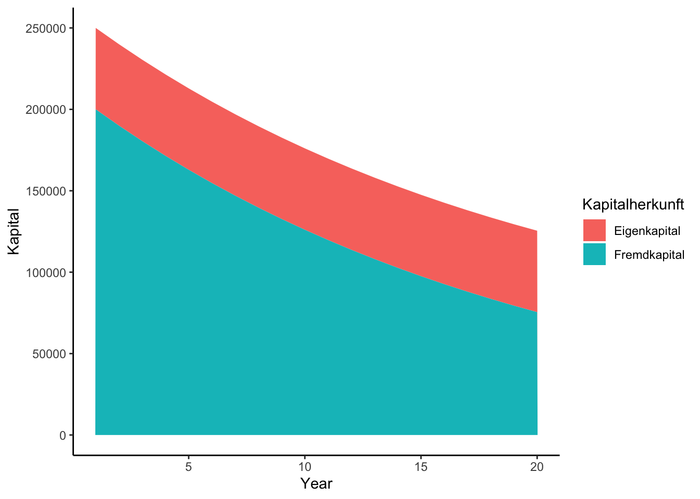
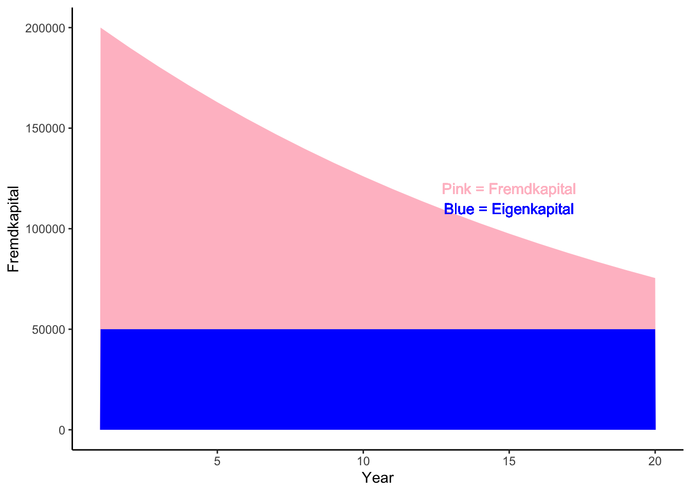
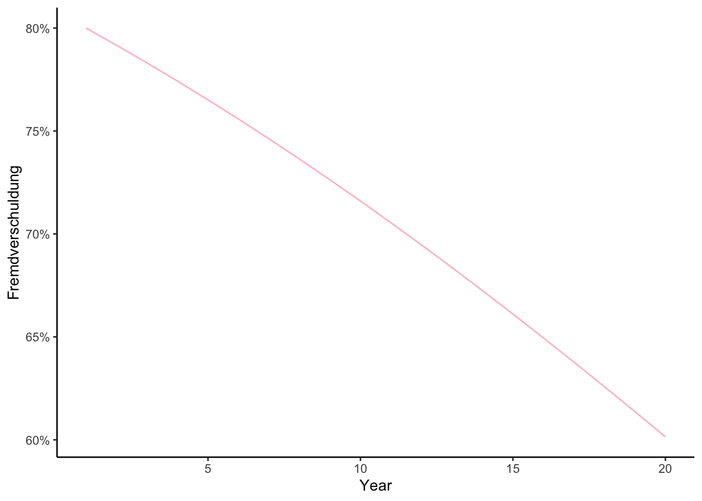

project_financials <- function(own_capital, total_debt, interest_rate, amortization_rate, years) {
equity <- numeric(length = years)
debt <- numeric(length = years)
mortgage_payments <- numeric(length = years)
amortization_payments <- numeric(length = years)
equity[1] <- own_capital
debt[1] <- total_debt
amortization_payments[1] <- total_debt*amortization_rate
mortgage_payments[1] <- total_debt* interest_rate
for (i in 2:years) {
mortgage_payments[i] <- debt[1] * interest_rate
equity[i] <- equity[1]
debt[i] <- debt[i - 1] - amortization_payments[i-1]
amortization_payments[i] <- debt[i] * amortization_rate
}
result <- data.frame(
Year = 1:years,
Eigenkapital = equity,
Fremdkapital = debt,
Jaehrliche_Zinszahlung = mortgage_payments,
Jaehrliche_Amortisationszahlung = amortization_payments
)
return(result)
}TestingTester
Creating functions for future financial projections
With a lot of ChatGPT-help i tried to work out a function projecting financial details of a real estate financing (total-depth and percentage of depth to own assets). I am absolutely not the financial guy over here… just wanted to do something i otherwise never do. Nevertheless, one might argue this makes no sense when running to AI for help. But rather than going down this philosophical sinkhole i show some overly simple graphs about cash - Enjoy!)
Import Function
First i add the function from a separate script - But i dont show it, because i want to keep it to myself ;-)!
Nah, just kidding. Here it is:
Inventing Data
Now i present to you the fruits of work with a freshly invented data-table Financial-projection:
Jahr Eigenkapital Fremdkapital Zinsen Amortisation Fremdverschuldung
1 1 50000 200000.00 2000 10000.000 0.8000000
2 2 50000 190000.00 2000 9500.000 0.7916667
3 3 50000 180500.00 2000 9025.000 0.7830803
4 4 50000 171475.00 2000 8573.750 0.7742409
5 5 50000 162901.25 2000 8145.062 0.7651493
6 6 50000 154756.19 2000 7737.809 0.7558071
7 7 50000 147018.38 2000 7350.919 0.7462166
8 8 50000 139667.46 2000 6983.373 0.7363807
9 9 50000 132684.09 2000 6634.204 0.7263035
10 10 50000 126049.88 2000 6302.494 0.7159896
11 11 50000 119747.39 2000 5987.369 0.7054447
12 12 50000 113760.02 2000 5688.001 0.6946752
13 13 50000 108072.02 2000 5403.601 0.6836885
14 14 50000 102668.42 2000 5133.421 0.6724928
15 15 50000 97535.00 2000 4876.750 0.6610974
16 16 50000 92658.25 2000 4632.912 0.6495120
17 17 50000 88025.33 2000 4401.267 0.6377477
18 18 50000 83624.07 2000 4181.203 0.6258159
19 19 50000 79442.86 2000 3972.143 0.6137292
20 20 50000 75470.72 2000 3773.536 0.6015007Baking
Now to finish the magic i will bake some graphs! @Fremdkapital will show you the yearly total depth values for the quired real instate, after deduction of amortization payments

Now the plot @Femdverschuldung2 shows “Fremd-” and “Eigenkapital” not stacked but ovarlayed:

And last a the percentage of Fremdverschuldung/Investment Total in @Fremdverschluldung3
